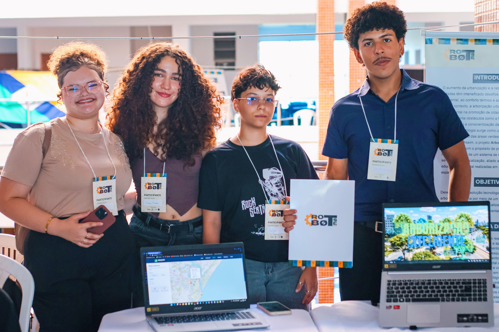

Monitoramento
Uso de sensores e dados para acompanhar umidade, temperatura e condições do entorno.
Projeto colaborativo
O projeto reúne uma equipe dedicada a transformar a arborização urbana por meio de monitoramento inteligente, análise de espécies e dados que ajudam cidades a tomarem decisões mais conscientes para o bem-estar da população e da natureza.

Júlio Monteiro • José Carlos • Vanessa Simplício • Roseane Silva • Asafe Emanuel • Pedro Moisés
Sobre o projeto
Arborização Inteligente surge com o objetivo de promover o planejamento e o cuidado com a vegetação urbana em Sergipe, um estado com uma das menores arborizações do país. O projeto combina tecnologia, sensoriamento e análises para auxiliar na identificação de áreas menos arborizadas, espécies invasoras e condições que impactam a qualidade do ambiente.
Uso de sensores e dados para acompanhar umidade, temperatura e condições do entorno.
Análise da espécie presente em cada local, distinguindo espécies invasoras e nativas.
Contribuição para melhorar o ar, reduzir ilhas de calor e sensibilizar a população.
O que é o projeto
Sergipe é um dos estados brasileiros com menor cobertura arbórea nas vias públicas. O projeto nasceu para transformar esse cenário com tecnologia, dados e ações educativas.
O sistema monitora umidade, temperatura e a presença de espécies invasoras ou nativas, oferecendo relatórios e indicadores para apoiar o planejamento urbano e o cuidado com o ambiente.
Impacto esperado
O projeto ajuda a reduzir problemas como ilhas de calor, estresse térmico, ameaça à vegetação nativa, quedas de energia decorrentes de árvores próximas a postes e a ineficiência da arborização urbana.
Notícias e destaques
A equipe planeja ações interativas em instituições escolares para ampliar o conhecimento sobre arborização urbana e conscientizar a população.
O projeto avança com a integração de sensores e dados que permitem acompanhar a saúde do ambiente e a qualidade do ar em cada local analisado.
As análises geradas ajudam a identificar áreas prioritárias para requalificação e melhor uso das espécies vegetais nas cidades.
Quem somos nós
Somos um grupo formado por Júlio Monteiro, José Carlos, Vanessa Simplício, Roseane Silva, Asafe Emanuel e Pedro Moisés, unidos por um propósito comum: transformar a arborização urbana com tecnologia e impacto social.
Contato
Se você quiser colaborar, apoiar, conhecer mais ou conversar sobre o projeto, vamos adorar ouvir você.